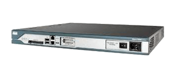
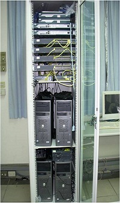
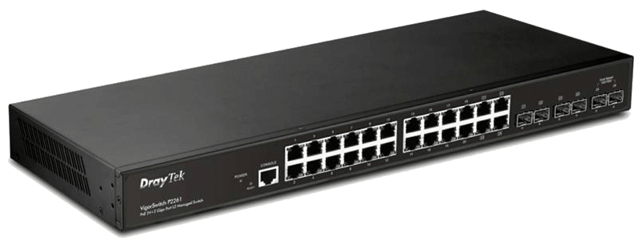

| 設備圖片 | 設備介紹 |
|---|---|
|  |
骨幹路由器 Backbone Router
骨幹路由器是指至少有一個啟用了OSPF的介面是和骨幹區域（Area 0）相連的路由器。一台骨幹路由器也可以同時是ABR或ASBR，如上圖中的R2和R3。如果一台路由器上所有的介面都屬於Area 0，那麼這台路由器也是一台內部路由器。參考資料來源 |
|  |
虛擬私人網路 VPN
虛擬私人網路（英語：Virtual Private Network，簡稱VPN），是一種常用於連線中、大型企業或團體與團體間的私人網路的通訊方法。虛擬私人網路的訊息透過公用的網路架構（例如：網際網路）來傳送行內網的網路訊息。它利用已加密的通道協議（Tunneling Protocol）來達到保密、傳送端認證、訊息準確性等私人訊息安全效果。這種技術可以用不安全的網路（例如：網際網路）來傳送可靠、安全的訊息。需要注意的是，加密訊息與否是可以控制的。沒有加密的虛擬私人網路訊息依然有被竊取的危險。參考資料來源 |
|  |
網路交換器 Poe Switch
透過這項技術可使包括網路電話、無線基地台、網路攝影機、集線器、電腦等裝置都能採用PoE技術供電，由於能藉由乙太網路獲得供電的電子設備無需額外的電源插座就可使用，所以同時能省去配置電源線的時間與金錢，使整個裝置系統的成本相對降低。而目前全球均普遍採用RJ-45網路插座，因此各種PoE設備都具備相容性。這項技術常常被跟同樣也是在同一條電纜上接收電源與資料（雖然是類比資料）的傳統電話網路（POTS）來對照。PoE不需要更改乙太網路的纜線架構即可運作，所以採用PoE系統不但節省成本易於佈線安裝還具備了遠程通電、斷電的能力。參考資料來源 |
|
網路效能模擬軟體 Estinet
EstiNet為交大所授權的尖端網路技術及成果(前身為NCTUns), 目前所研發的網路模擬器產品在世界知名度上的排名位居世界前二名，主要用途做為網路模擬，可模擬真實網路與架設虛擬網路，並可用於實際架設前的效能評估。參考資料來源 |